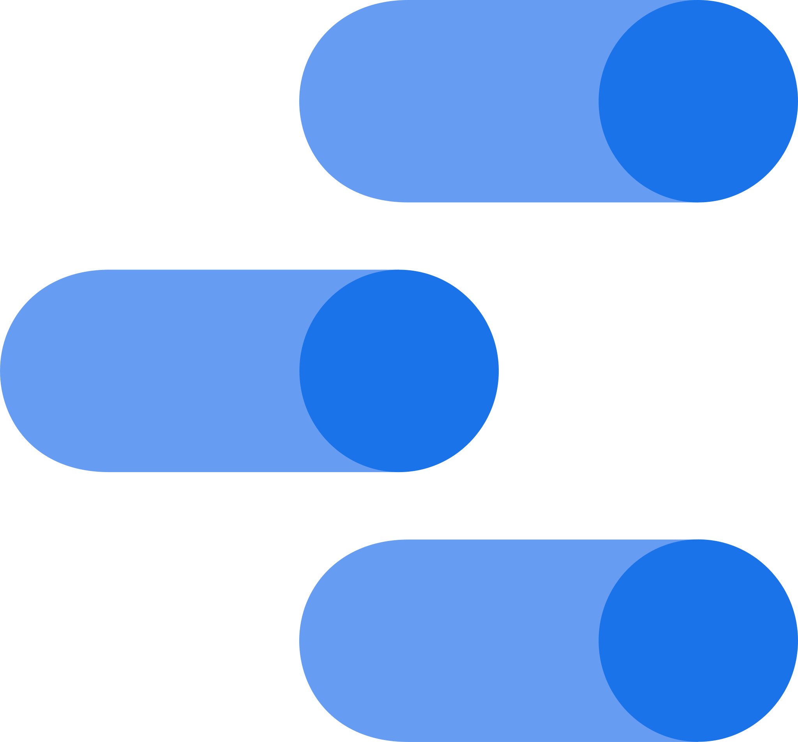

Alexander Baldeón Arrunátegui
Economista con alma de programador
Economista con alma de programador
Este espacio surge como un proyecto personal, donde busco implementar y compartir lo aprendido en los últimos años en materia de investigación y programación (github).
Este código tiene por finalidad extraer las coordenadas geográficas (latitud, longitud), en formato excel, de los paraderos con riesgo covid. La información proviene de la Autoridad de Transporte Urbano para Lima y Callao (ATU), disponible en: https://sistemas.atu.gob.pe/paraderosCOVID#
Este código tiene por finalidad sistematizar noticias departamentales de la página de RPP en formato delimitado por comas (.csv) utilizando librerias como requests y lxml
Este tablero tuvo como finalidad proveer información amigable y pública sobre el proceso de vacunación a nivel territorial. Asimismo, se le hacia seguimiento departamental al stock de dosis disponibles
Este tablero muestra la ubicación de las 1874 municipalidades y sus principales indicadores. Asimismo, permite comparar indicadores entre territorios.
En el marco de la implementación del Plan de Cierre de Brechas (PCB), se elabora un tablero caracterizando los 34 nucleos dinamizadores de desarrollo (NDD)
Principales tecnologías utilizadas
Python 
QGIS 
Tableau 
Excel VBA 
Stata
DataStudio 
HTML 
CSS 
JavaScript